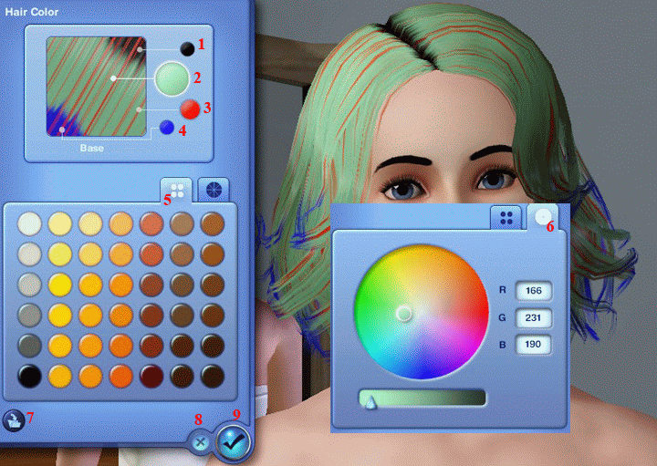
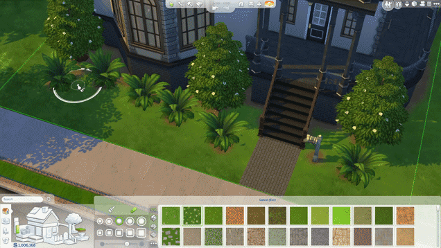

在模擬市民3，社區感覺比較像社區。因為滑鼠點一點就能操控人物到社區的各個角落。
在社區內，如果做壞事有機率會被制止（裸奔會被警察罰錢），讓人感覺很真實。
調色盤的功能很好玩，如果衣服缺顏色的話，自己調就有了。還能選材質，一件衣服能變出不同花樣。
就算只有基本的遊戲片也能享受遊戲所帶來的樂趣。
我玩了快一個月還沒玩膩哈哈（模擬市民4因為劇情的部分薄弱，對我來說比較不耐玩）
如果喜歡打扮奇X暖暖之類的的話，模擬市民4的創建模擬市民功能會讓你欲罷不能！
每捏一個人就浪費我1個小時，模擬市民真討厭
喜歡蓋房子的話，模擬市民4的建築選擇更有彈性，能夠蓋出各種形狀的房子。
家具也有更多選擇，可以將自己的房子改造成夢想中的樣子。
現在遊戲還在發展中，以後可能會有更多功能（像模擬市民3的未來世界）。
目前資料片已出到鄉村生活，有興趣提前退休的人可以買來玩玩看！
從6月29日至7月7日，模擬市民4有夏日音樂派對，詳情點擊
（雖然只有三位歌手表演，不過對我來說還蠻有趣的）